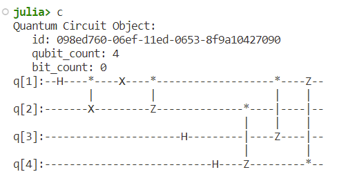
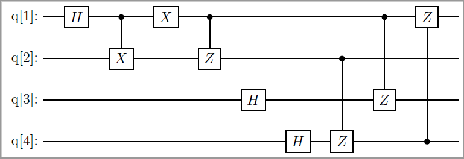

This is CRS Quantum Documentation
The CRS Quantun package contains a set of useful functions for scientists using the Qube computer.
Missing docstring for Stop. Check Documenter's build log for details.
Shovel.ToLaTeX — FunctionToLaTeX(c::QuantumCircuit, FName::String)
Will generate a file containing the Latex/quantikz code in the standalone documentclass.
Arguments
circuit::QuantumCircuit: a QuantumCircuit as defined by SnowflakeFName::String: the name of the file to create. Warning! It will overwrite if already existing.
Example
julia> ToLaTeX(circuit, "Foo.bar")
This is the standard output of a Snowflake circuit:

This is the output file generated by ToLaTeX(). It can be copy&paste to any other Latex document.
\documentclass{standalone}
\usepackage{tikz}
\usetikzlibrary{quantikz}
\begin{document}
\begin{quantikz}
\lstick{q[1]: } & \gate{H} & \ctrl{1} & \gate{X} & \ctrl{1} & \qw & \qw & \qw & \ctrl{2} & \gate{Z} & \qw \\
\lstick{q[2]: } & \qw & \gate{X} & \qw & \gate{Z} & \qw & \qw & \ctrl{2} & \qw &\qw & \qw \\
\lstick{q[3]: } & \qw & \qw & \qw & \qw & \gate{H} & \qw & \qw & \gate{Z} & \qw & \qw \\
\lstick{q[4]: } & \qw & \qw & \qw & \qw & \qw & \gate{H} & \gate{Z} & \qw & \ctrl{-3} & \qw
\end{quantikz}
\end{document}This is the result of a pdfLaTeX compilation.
